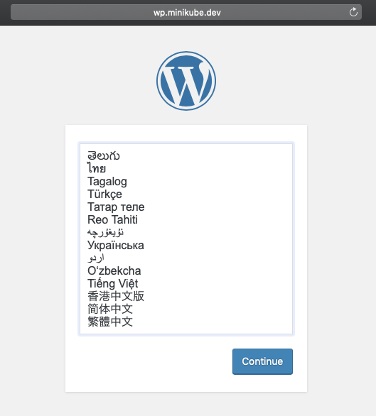

はじめに環境の準備 (ubuntuの場合)minikube CLIのダウンロードkubectlのインストールdocker cliのインストールVirtualBoxのインストールminikubeの起動minikubeのIPアドレス確認Addonの有効化Docker環境変数の設定コンテナイメージの作成作成準備Dockerfileの作成nginx.confの設定例index.htmlの例docker buildコマンドによるイメージの作成コンテナの実行docker runコマンドによるコンテナの起動docker psコマンドによるコンテナの起動確認curlコマンドによりコンテナの起動を確認(オプション) docker hubへのコンテナイメージの登録docker loginによりDocker Hubにログインコンテナイメージのタグ付タグ付けされたコンテナイメージの確認コンテナイメージのプッシュkubectlコマンドの基本クラスターへの接続kubectlの設定ファイルContextの確認Contextの切り替えクラスター上のリソースの確認kubernetes nodeの確認リソース個別の確認kubernetes上でのコンテナの実行CLIによるDeploymentの作成deploymentの確認kubectl runコマンドによるdeploymentの作成作成されたリソースの確認ServiceによるPodの外部公開kubectl exposeによりdeploymentをNodePort Serviceとして公開Serviceの確認Serviceへのアクセス確認PodのスケールアウトReplicaset状態の確認Replica数の変更ReplicasetとPod数の確認Ingressによるサービスの公開ClusterIP Serviceの作成Ingressリソースの作成Ingressへのアクセス確認作成したリソースの削除運用に利用するコマンドコンテナ内のlog確認コンテナ内のシェル実行リソース詳細の確認YAMLファイルによるリソースの作成リソースの定義方法YAMLファイルによるリソースの作成作成されたリソースの確認Ingressに対するアクセスの確認YAMLファイルによるリソースの削除Podの作成例複数コンテナで構成されるPodの定義方法複数コンテナで構成されるPodの作成Pod内の確認alpine-linuxコンテナへの接続nginxコンテナへの接続Persistent VolumeStorageClassの定義minikubeの場合OpenShift(GlusterFS)の場合Persisten Volume (PV)の作成PVC(Persistent Volume Claim)の作成Podへのマウント確認Podに接続したPVにファイルを作成Podの削除Podの再作成とPV内に作成したファイルの残存確認Persistent VolumeのDynamic ProvisoningDeploymentの作成Persistent Volumeの利用Podへのアクセス確認Podの削除とデータの永続性環境の削除Config Mapの利用Config Mapの構成Config Mapを利用したPodの起動Deploymentの作成Config Mapが反映されていることの確認Deploymentの削除Secretの利用Secretの作成base64エンコードの方法Secretリソースの作成Deploymentの作成Deploymentの削除MySQL Deploymentの作成MySQL Deploymentの作成と確認MySQL Serviceの作成Wordpress Deploymentの作成Wordpress Deploymentの作成Wordpresss Serviceの作成IngressによるWordpressの公開Wordpress動作確認ローリングアップデートによるバージョン変更コンテナイメージの更新アップグレード前の状態確認アップグレードの実行Wordpresssアップグレードの確認環境の削除NamespaceデフォルトのネームスペースNamespaceの作成Namespaceへのリソースの作成リソースの削除OpenShift固有の注意点minishiftkubectlとocコマンドProjectとNamespaceOpenShiftへのログインPodの起動OpenShift Router
はじめに
このチュートリアルのゴールはkubernetesの各種機能をつかって、Wordpressをkubernetesクラスター上で起動し外部からアクセス可能にすることである。
利用する各種ファイルはここ。以下、説明中の各種コマンドはこのリポジトリディレクトリ内から実行することを想定している。
OpenShiftではIngressリソースの代わりに、Routerリソースが利用されるため注意が必要。
環境の準備 (ubuntuの場合)
minikube CLIのダウンロード
minikubeはkubernetresクラスターをmacOS/Linux/Windows上で簡単に起動するための環境。テストやPOC向けに利用することが可能。
x# curl -Lo minikube https://storage.googleapis.com/minikube/releases/v0.35.0/minikube-linux-amd64 && chmod +x minikube && sudo cp minikube /usr/local/bin/ && rm minikube# minikube versionminikube version: v0.35.0kubectlのインストール
kubernetesクラスターを管理するためのkubectlをインストールする。
xxxxxxxxxxsudo apt-get update && sudo apt-get install -y apt-transport-httpscurl -s https://packages.cloud.google.com/apt/doc/apt-key.gpg | sudo apt-key add -sudo sh -c 'cat <<EOF >/etc/apt/sources.list.d/kubernetes.listdeb http://apt.kubernetes.io/ kubernetes-xenial mainEOF'apt-get update && apt-get install -y kubectldocker cliのインストール
dockerのクライアントCLIをインストールする。docker daemonはminikube VM内で起動するdockerを利用するためインストール不要。
xxxxxxxxxxapt-get update && apt-get install apt-transport-https ca-certificates curl gnupg-agent software-properties-commoncurl -fsSL https://download.docker.com/linux/ubuntu/gpg | sudo apt-key add -add-apt-repository \ "deb [arch=amd64] https://download.docker.com/linux/ubuntu \ $(lsb_release -cs) \ stable"apt-get update && apt-get install docker-ce-cliVirtualBoxのインストール
minikubeをVMとして起動するためのVirtualBoxをインストールする。
xxxxxxxxxxapt-get install virtualboxminikubeの起動
VMをスタートしてkubernetes環境が構築される。
xxxxxxxxxxminikube start --memory 4096 --cpus 8minikubeのIPアドレス確認
minikube VMに割り当てられているIPアドレスを確認する。
xxxxxxxxxxminikube ip192.168.99.100Addonの有効化
Ingress, storage-provisionor, storage-provisioner-glusterを有効化する
xxxxxxxxxxminikube addons enable ingress- ingress was successfully enabledminikube addons enable storage-provisioner- storage-provisioner was successfully enabledminikube addons enable storage-provisioner-gluster- storage-provisioner-gluster was successfully enabledminikube config view- ingress: true- storage-provisioner: true- storage-provisioner-gluster: true一度有効化したminikubeのaddonを、無効化して再度有効化した場合、pvが作成できない場合がある。作成できなくなった場合は、
minikube deleteで一度環境を削除して再度minikube startすると正常に機能する>場合がある。
Docker環境変数の設定
VM内で起動するdockerをホストから利用できるよう環境変数を設定する。
xxxxxxxxxxminikube docker-env > ~/.bashrcsource ~/.bashrcenv | grep DOCKERDOCKER_TLS_VERIFY="1"DOCKER_HOST="tcp://192.168.99.100:2376"DOCKER_CERT_PATH="/Users/masanara/.minikube/certs"DOCKER_API_VERSION="1.35"VM内のdockerデーモンに接続可能なことを確認する
xxxxxxxxxxdocker versionClient: Docker Engine - Community Version: 18.09.3 API version: 1.35 Go version: go1.10.8 Git commit: 774a1f4 Built: Thu Feb 29 06:40:58 2019 OS/Arch: linux/amd64 Experimental: falseServer: Engine: Version: 18.06.2-ce API version: 1.38 (minimum version 1.12) Go version: go1.10.3 Git commit: 6d37f41 Built: Sun Feb 10 03:51:58 2019 OS/Arch: linux/amd64 Experimental: false
コンテナイメージの作成
コンテナイメージはDockerfileを設計書として、docker buildコマンドにより作成することが可能。
作成準備
Dockerfileの作成
FROM alpine:3.29とすることで、alpine linuxのバージョン3.9をベースとしたイメージを作成する。RUNによりコンテ内で実行するコマンドを指定する。COPYによりファイルをコンテナ内にコピーする。CMDによりコンテナが起動した際に実行されるコマンドを指定する。
Dockerfileで利用可能なオプションの詳細はここを参照。
xxxxxxxxxxFROM alpine:3.9RUN apk --update add nginx && mkdir /var/www/htmlCOPY nginx.conf /etc/nginx/nginx.confCOPY index.html /var/www/html/index.htmlEXPOSE 80CMD ["nginx","-g","daemon off; pid /run/nginx.pid;"]上記Dockerfileにより以下のようなイメージが作成される。各行がコンテナイメージのレイヤーとして作成される。
nginx.confの設定例
コンテナ内にコピーするnginxの設定ファイルを用意する。設定ファイルのポイントは以下の2点。
- エラーログ、アクセスログをそれぞれ標準エラー出力(/dev/stderr)、標準出力(/dev/stdout)に出力するよう指定。
- /var/www/htmlディレクトリ内のindex.htmlをディレクトリインデックスとして指定。
xxxxxxxxxxuser nginx;worker_processes auto;pcre_jit on;error_log /dev/stderr warn;include /etc/nginx/modules/*.conf;events {worker_connections 1024;}http {include /etc/nginx/mime.types;default_type application/octet-stream;server_tokens off;client_max_body_size 1m;keepalive_timeout 65;sendfile on;tcp_nodelay on;ssl_prefer_server_ciphers on;ssl_session_cache shared:SSL:2m;gzip_vary on;log_format main '$remote_addr - $remote_user [$time_local] "$request" ''$status $body_bytes_sent "$http_referer" ''"$http_user_agent" "$http_x_forwarded_for"';access_log /dev/stdout main;server {listen 80 default_server;server_name _;sendfile off;root /var/www/html;index index.html;location / {try_files $uri $uri /index.html;}}}
index.htmlの例
nginxコンテナがWebサーバーとして提供するコンテンツとして、任意のhtmlファイルを作成。
xxxxxxxxxx<html><body><h1>Docker TEST</h1></body></html>docker buildコマンドによるイメージの作成
Dockerfile, nginx.conf, index.htmlを同じディレクトリに置き、該当のディレクトリ内でdocker buildコマンドを実行する。-tオプションでタグ名(イメージ名)を指定する。
xxxxxxxxxxdocker build -t nginx:alpine .コンテナの実行
docker runコマンドによるコンテナの起動
docker runコマンドによりコンテナイメージをしてコンテナの起動が可能。-pオプションによりコンテナ実行ホストのポートにコンテナのポートをマッピングして、外部公開可能。
xxxxxxxxxxdocker run -d -p 8080:80 nginx:alpinedocker psコマンドによるコンテナの起動確認
起動しているコンテナはdocker psコマンドにより確認可能。
xxxxxxxxxxdocker psCONTAINER ID IMAGE COMMAND CREATED STATUS PORTS NAMESbb6f01dba077 nginx:alpine "nginx -g 'daemon of…" 7 seconds ago Up 6 seconds 0.0.0.0:8080->80/tcp relaxed_austincurlコマンドによりコンテナの起動を確認
curlコマンドによりlocalhostの8080番ポートに接続し、nginxが起動していることを確認する。
xxxxxxxxxxcurl localhost:8080<html><body><h1>Docker TEST</h1></body></html>(オプション) docker hubへのコンテナイメージの登録
docker loginによりDocker Hubにログイン
作成したコンテナイメージはDocker HubなどのRegistryに登録可能。Docker Hubにコンテナイメージを登録する場合はアカウントの作成が必要。(https://hub.docker.com/signupからアカウントの作成が必要。)
Docker Hubの他に、パブリッククラウドの提供する、Amazon ECR(aws_account_id.dkr.ecr.region.amazonaws.com)、Google Container Registry(GCR:gcr.io)、Azure Container Registory(ACR:azurecr.io)が利用可能。オンプレミスにRegistryを構築することでプライベートなレジストリを利用することも可能。
xxxxxxxxxxdocker loginLogin with your Docker ID to push and pull images from Docker Hub. If you don't have a Docker ID, head over to https://hub.docker.com to create one.Username: username000Password: xxxxxxxxLogin Succeededコンテナイメージのタグ付
docker hubにアップロードするために、コンテナイメージに新たなタグ付けをする。タグ名は[自身のDocker Hubのアカウント名]/nginx:alpineとすること。
xxxxxxxxxxdocker tag nginx:alpine username000/nginx:alpineタグ付けされたコンテナイメージの確認
xxxxxxxxxxdocker imagesREPOSITORY TAG IMAGE ID CREATED SIZEnginx alpine 2e8ce637cbae 21 minutes ago 8.27MBusername000/nginx alpine 2e8ce637cbae 21 minutes ago 8.27MBコンテナイメージのプッシュ
xxxxxxxxxxdocker push username000/nginx:alpineThe push refers to repository [docker.io/username000/nginx]41c468a6a8fc: Pushed36f565774019: Pushede1465c7bf8f8: Layer already exists503e53e365f3: Layer already existsalpine: digest: sha256:5bb7690c75f1b6fb217b951fc5152df9b77f9a74e92450f19d8226f382175684 size: 1154
kubectlコマンドの基本
クラスターへの接続
kuberneteseクラスターの操作はkubectlコマンドにより実行する。kubectlコマンドはkubernetesクラスターのMasterに接続してリモートで操作を行うことが可能。

kubectlの設定ファイル
~/.kube/configファイルに接続先のkubernetes cluster情報や、接続に必要な認証情報が保存されている。接続に関する情報はcontextと呼ばれるオブジェクトで管理され、接続先・認証方法の組み合わせをパラメータとして持つ。複数のcontextをconfig内に定義可能。通常設定ファイルを記述する必要はなく、何らかの方法でconfigファイルが提供される。
xxxxxxxxxxapiVersionv1clusterscluster insecure-skip-tls-verifytrue serverhttps//k8s-master1.example.com8443 namek8s-master1-example-com8443cluster insecure-skip-tls-verifytrue serverhttps//k8s-master2.example.com8443 namek8s-master2-example-com8443contextscontext clusterk8s-master1-example-com8443 namespace"my-namespace" useruser01/k8s-master1-example-com8443 namemy-namespace on master1context clusterk8s-master2-example-com8443 namespace"ns1" useruser02/k8s-master2-example-com8443 namens1 on master2current-contextns1 on master2kindConfigpreferencesusersnameuser01/k8s-master1-example-com8443 user tokenXXXXXXXXXnameuser02/k8s-master2-example-com8443 user tokenXXXXXXXXXContextの確認
接続先やnamespaceはContextとして定義されている。
xxxxxxxxxxkubectl config get-contextsCURRENT NAME CLUSTER AUTHINFO NAMESPACE my-namespace on master1 k8s-master1-example-com:8443 user01/k8s-master1-example-com:8443 my-namespace* ns1 on master2 k8s-master2-example-com:8443 user02/k8s-master2-example-com:8443 ns1Contextの切り替え
contextを切り替えることで、kubectlの接続先を変更することが可能。
xxxxxxxxxxkubectl config use-context 'my-namespace on master1'Switched to context "my-namespace on master1".kubectl config get-contextsCURRENT NAME CLUSTER AUTHINFO NAMESPACE* my-namespace on master1 k8s-master1-example-com:8443 user01/k8s-master1-example-com:8443 my-namespace ns1 on master2 k8s-master2-example-com:8443 user02/k8s-master2-example-com:8443 ns1クラスター上のリソースの確認
kubectl get 〜で各種リソースの存在を確認可能。
kubernetes nodeの確認
xxxxxxxxxxkubectl get nodesNAME STATUS ROLES AGE VERSIONk8s-node-01 Ready <none> 26d v1.12.4k8s-node-02 Ready <none> 27d v1.12.4k8s-node-03 Ready <none> 27d v1.12.4k8s-node-04 Ready <none> 26d v1.12.4k8s-node-05 Ready <none> 27d v1.12.4k8s-node-06 Ready <none> 27d v1.12.4k8s-node-07 Ready <none> 26d v1.12.4k8s-node-08 Ready <none> 27d v1.12.4-w oオプションを利用すると詳細情報を確認可能
xxxxxxxxxxkubectl get nodes -o wideNAME STATUS ROLES AGE VERSION INTERNAL-IP EXTERNAL-IP OS-IMAGE KERNEL-VERSION CONTAINER-RUNTIMEk8s-node-01 Ready <none> 26d v1.12.4 172.10.0.12 172.10.0.12 Ubuntu 16.04.5 LTS 4.15.0-43-generic docker://18.6.1k8s-node-02 Ready <none> 27d v1.12.4 172.10.0.5 172.10.0.5 Ubuntu 16.04.5 LTS 4.15.0-43-generic docker://18.6.1k8s-node-03 Ready <none> 27d v1.12.4 172.10.0.10 172.10.0.10 Ubuntu 16.04.5 LTS 4.15.0-43-generic docker://18.6.1k8s-node-04 Ready <none> 26d v1.12.4 172.10.0.11 172.10.0.11 Ubuntu 16.04.5 LTS 4.15.0-43-generic docker://18.6.1k8s-node-05 Ready <none> 27d v1.12.4 172.10.0.9 172.10.0.9 Ubuntu 16.04.5 LTS 4.15.0-43-generic docker://18.6.1k8s-node-06 Ready <none> 27d v1.12.4 172.10.0.7 172.10.0.7 Ubuntu 16.04.5 LTS 4.15.0-43-generic docker://18.6.1k8s-node-07 Ready <none> 26d v1.12.4 172.10.0.6 172.10.0.6 Ubuntu 16.04.5 LTS 4.15.0-43-generic docker://18.6.1k8s-node-08 Ready <none> 27d v1.12.4 172.10.0.8 172.10.0.8 Ubuntu 16.04.5 LTS 4.15.0-43-generic docker://18.6.1リソース個別の確認
kubectl get 〜で指定した各リソースの個別の情報を表示可能。
xxxxxxxxxxkubectl get node k8s-node-01NAME STATUS ROLES AGE VERSIONk8s-node-01 Ready <none> 26d v1.12.4-o jsonオプションによりJSONフォーマットですべての情報を出力可能。(yamlオプションも利用可能)
xxxxxxxxxxkubectl get node k8s-node-01 -o json{ "apiVersion": "v1", "kind": "Node", "metadata": { "annotations": { "node.alpha.kubernetes.io/ttl": "0", "volumes.kubernetes.io/controller-managed-attach-detach": "true" }, "creationTimestamp": "2019-01-17T02:51:43Z",kubectl describe 〜で指定した各リソースの詳細を確認可能。以下はnodeの表示例。PodやDeployment、Serviceなども確認可能。
xxxxxxxxxxkubectl describe node k8s-node-01Name: k8s-node-01Roles: <none>Labels: beta.kubernetes.io/arch=amd64 beta.kubernetes.io/os=linux bosh.id=df99fcd8-0438-497e-be72-5fa57be5d67d bosh.zone=Compute-AZ failure-domain.beta.kubernetes.io/zone=Compute-AZ kubernetes.io/hostname=172.10.0.12 spec.ip=172.10.0.12Annotations: node.alpha.kubernetes.io/ttl: 0 volumes.kubernetes.io/controller-managed-attach-detach: trueCreationTimestamp: Thu, 17 Jan 2019 11:51:43 +0900....
kubernetes上でのコンテナの実行
CLIによるDeploymentの作成
deploymentの確認
なにも作成されていないことを確認する。
xxxxxxxxxxkubectl get deploymentkubectl runコマンドによるdeploymentの作成
kubectl runコマンドにコンテナイメージ(--image=nginx:alpine)、アプリ名(nginx)、アプリのポート番号(--port=80)を指定して実行することで、コンテナイメージがPodとして起動する。
xxxxxxxxxxkubectl run nginx --image=nginx:alpine --port=80kubectl runによるdeploymentの作成は推奨されていない。
kubectl run --generator=deployment/apps.v1 is DEPRECATED and will be removed in a future version. Use kubectl run --generator=run-pod/v1 or kubectl create instead.
作成されたリソースの確認
deployment, replicaset, podが作成されている
xxxxxxxxxxkubectl get allNAME READY STATUS RESTARTS AGEpod/nginx-65748db69b-69xct 1/1 Running 0 29sNAME TYPE CLUSTER-IP EXTERNAL-IP PORT(S) AGEservice/kubernetes ClusterIP 10.96.0.1 <none> 443/TCP 5dNAME DESIRED CURRENT UP-TO-DATE AVAILABLE AGEdeployment.apps/nginx 1 1 1 1 29sNAME DESIRED CURRENT READY AGEreplicaset.apps/nginx-65748db69b 1 1 1 29sDeploymentとReplicaset、Podは以下のような関係になっており、Deploymentを作成したことによりReplicaset/Podが作成されている。

ServiceによるPodの外部公開
kubectl exposeによりdeploymentをNodePort Serviceとして公開
NodePort ServiceはKubernetes Nodeのポート番号を利用して、Podへのアクセスを行うためのServiceリソース。Serviceには以下の種類がある。
- ClusterIp : クラスタ内のIPにServiceを公開する。Serviceはクラスタ内からのみアクセス可能。(デフォルトのServiceType)
- NodePort : 各ノードのIP上のServiceを静的ポート(NordPort)に公開する。NodePort ServiceがルーティングするClusterIP Serviceが自動的に作成される。
<NodeIp>:<NordPort>を要求することで、クラスタ外からNordPort Serviceにアクセス可能。利用可能なポート番号は30000～32767の範囲に限定される。 - LoadBalancer : クラウドプロバイダのロードバランサを使用して外部にServiceを公開する。外部ロードバランサがルーティングするNordPort ServiceとClusterIP Serviceが自動的に作成される。
- ExternalName : 値を含むCNAMEレコードを返すことにより、ServiceをexternalNameフィールドのコンテンツ(たとえば、foo.bar.example.com)にマッピングする。(この型を使うにはバージョン1.7以上のkube-dnsが必要)
xxxxxxxxxxkubectl expose deployment nginx --name=nginx-np --port=80 --target-port=80 --type="NodePort"Serviceの確認
Serviceリソースを確認すると、nginx-npサービスが作成され割り当てられたNodePort(以下の例では32726番)を確認可能。
xxxxxxxxxxkubectl get svcNAME TYPE CLUSTER-IP EXTERNAL-IP PORT(S) AGEkubernetes ClusterIP 10.96.0.1 <none> 443/TCP 5dnginx-np NodePort 10.108.151.22 <none> 80:32726/TCP 32sServiceへのアクセス確認
NodeのIPアドレスにポート番号をつけてアクセスする。(NodeのIPアドレスはkubectl get node -o wideにより確認可能。)
xxxxxxxxxxcurl 192.168.99.100:32726<html><body><h1>Docker TEST</h1></body></html>Podのスケールアウト
deploymentのレプリカ数を3に変更し、ReplicasetのDESIRED数が変更されることを確認。Pod数も指定した数に変更される。
Replicaset状態の確認
スケールアウト前にReplicasetの状態を確認し、DESIRED=1となっていることを確認する。
xxxxxxxxxxkubectl get rsNAME DESIRED CURRENT READY AGEnginx-65748db69b 1 1 1 54sReplica数の変更
DeploymentのReplica数を3に変更する
xxxxxxxxxxkubectl scale --replicas=3 deployment/nginxdeployment.extensions "nginx" scaledReplicasetとPod数の確認
Replicasetがのレプリカ数が3に変更され、Pod数が3つに増えたことを確認する
xxxxxxxxxxkubectl get rsNAME DESIRED CURRENT READY AGEnginx-65748db69b 3 3 2 1mkubectl get podsNAME READY STATUS RESTARTS AGEnginx-65748db69b-bhcxv 1/1 Running 0 1mnginx-65748db69b-lzpwj 1/1 Running 0 11snginx-65748db69b-xpms4 1/1 Running 0 11s
Ingressによるサービスの公開
通常、ClusterIPやNodeIPでPodを外部公開することはしない。Ingressと呼ばれるリソースによりClusterIPを外部に対してL7 Load Balancerで公開する。
ClusterIP Serviceの作成
Nginx deploymentに対するClusterIP Serviceを新たに作成する。
xxxxxxxxxxkubectl expose deploy nginx --port=80 --target-port=80service "nginx" exposed作成されたClusterIP Serviceを確認する。
xxxxxxxxxxkubectl get svcNAME TYPE CLUSTER-IP EXTERNAL-IP PORT(S) AGEkubernetes ClusterIP 10.96.0.1 <none> 443/TCP 5dnginx ClusterIP 10.109.15.84 <none> 80/TCP 38mnginx-np NodePort 10.108.151.22 <none> 80:32726/TCP 48mIngressリソースの作成
IngressのFQDN(.spec.rules[].host)は環境似合わせて適切なFQDNに変更すること。
xxxxxxxxxxapiVersionextensions/v1beta1kindIngressmetadata namenginxspec ruleshostnginx.minikube.example http pathsbackend serviceNamenginx servicePort80上記yamlによりIngressリソースを作成する。
xxxxxxxxxxkubectl apply -f nginx/ingress.yamlingress.extensions "nginx" created作成したIngressを確認する。
xxxxxxxxxxkubectl get ingressNAME HOSTS ADDRESS PORTS AGEnginx nginx.minikube.example 80 15sIngressへのアクセス確認
作成したIngressにアクセスするには指定したFQDNに対する名前解決(hostsファイル or DNS)を設定するか、アクセス時にHostヘッダを付与する。
xxxxxxxxxxcurl 192.168.99.100 -H 'Host: nginx.minikube.example'<html><body><h1>Docker TEST</h1></body></html作成したリソースの削除
ここまでで作成したIngress, Deployment, Serviceリソースをすべて削除。
xxxxxxxxxxkubectl delete -f nginx/ingress.yamlingress.extensions "nginx" deletedkubectl delete deploy nginxdeployment.extensions "nginx" deletedkubectl delete svc nginxservice "nginx" deletedkubectl delete svc nginx-npservice "nginx-np" deleted
運用に利用するコマンド
コンテナ内のlog確認
コンテナのログ・エラーを適切に設定しておくと、kubectl logsコマンドによりログを確認可能。podの状態の一覧を確認し、PodのIDを指定してPodの標準出力に対するログ出力を確認
xxxxxxxxxxkubectl get podskubNAME READY STATUS RESTARTS AGEnginx-65748db69b-bhcxv 1/1 Running 0 6mnginx-65748db69b-lzpwj 1/1 Running 0 5mnginx-65748db69b-xpms4 1/1 Running 0 5mkubectl logs -f nginx-65748db69b-bhcxv172.17.0.1 - - [12/Feb/2019:15:20:19 +0000] "GET / HTTP/1.1" 200 47 "-" "curl/7.52.1" "-"172.17.0.1 - - [12/Feb/2019:15:20:20 +0000] "GET / HTTP/1.1" 200 47 "-" "curl/7.52.1" "-"コンテナ内のシェル実行
コンテナを指定して、kubectl execコマンドによりコンテナ内のシェルを実行可能。(通常コンテナにSSHすることはせず、kubectl execを利用する)
xxxxxxxxxxkubectl get podskNAME READY STATUS RESTARTS AGEnginx-65748db69b-bhcxv 1/1 Running 0 7mnginx-65748db69b-lzpwj 1/1 Running 0 6mnginx-65748db69b-xpms4 1/1 Running 0 6mkubectl exec -it nginx-65748db69b-bhcxv /bin/sh/ # ls -l /etc/nginx/total 36drwxr-xr-x 2 root root 4096 Feb 12 08:47 conf.d-rw-r--r-- 1 root root 1077 Dec 18 20:20 fastcgi.conf-rw-r--r-- 1 root root 1007 Dec 18 20:20 fastcgi_params-rw-r--r-- 1 root root 5170 Dec 18 20:20 mime.typesdrwxr-xr-x 2 root root 4096 Feb 12 08:47 modules-rw-r--r-- 1 root root 2908 Feb 12 09:17 nginx.conf-rw-r--r-- 1 root root 636 Dec 18 20:20 scgi_params-rw-r--r-- 1 root root 664 Dec 18 20:20 uwsgi_paramsリソース詳細の確認
kubernetesの各種リソースの詳細を確認するには、kubectl describeコマンドを利用する。Podの作成が失敗した場合はこのコマンドで原因調査が可能。
xxxxxxxxxxkubectl get podsNAME READY STATUS RESTARTS AGEmysql-7f96fb5df6-b2sh7 0/1 Pending 0 22mnginx-84474f874-5fsvf 0/1 ErrImagePull 0 13snginx-84474f874-c7s9v 0/1 ErrImagePull 0 13snginx-84474f874-sjpkd 0/1 ErrImagePull 0 13skubectl describe pod nginx-84474f874-5fsvfName: nginx-84474f874-5fsvfNamespace: default...Events: Type Reason Age From Message ---- ------ ---- ---- ------- Normal Scheduled 20s default-scheduler Successfully assigned default/nginx-84474f874-5fsvf to minikube Normal Pulling 18s kubelet, minikube pulling image "masanara/nginx-php:0.8" Warning Failed 12s kubelet, minikube Failed to pull image "masanara/nginx-php:0.8": rpc error: code = Unknown desc = Error response from daemon: manifest for masanara/nginx-php:0.8 not found Warning Failed 12s kubelet, minikube Error: ErrImagePull Normal BackOff 12s kubelet, minikube Back-off pulling image "masanara/nginx-php:0.8" Warning Failed 12s kubelet, minikube Error: ImagePullBackOff
YAMLファイルによるリソースの作成
これまではkubectlコマンドを利用して、Deployment/Pod/Service/Ingress(リソース)を作成してきたが通常はYAMLファイルで定義し、YAMLファイルによりkubernetesクラスター上にリソースを作成する。
Deploymentを定義
- コンテナイメージの指定(masanara/nginx-php:1.0)
- レプリカ数を3に指定
- コンテナに対するprobe(ヘルスチェック)の指定
Serviceを定義
- ClusterIPとしてサービスを定義
Ingressを定義
- Ingressとして「nginx.minikube.example」に対するアクセスを定義
- nginx serviceに対してIngressを定義
リソースの定義方法
上記のDeployment, Service, Ingressを一つのYAMLファイルにした例は以下の通り。複数のyamlファイルは---で区切ることで、単一のyamlファイルとすることができるため、Deployment、Serviceを単一のファイルとして作成。
xxxxxxxxxxapiVersionextensions/v1beta1kindDeploymentmetadata namenginxspec replicas3 selector matchLabels appnginx strategy rollingUpdate maxSurge1 maxUnavailable0 typeRollingUpdate template metadata labels appnginx spec containersimagemasanara/nginx-php1.0 imagePullPolicyIfNotPresent namenginx portscontainerPort80 protocolTCP readinessProbe failureThreshold3 httpGet path/index.php port80 schemeHTTP initialDelaySeconds15 periodSeconds5 successThreshold1 timeoutSeconds1---apiVersionv1kindServicemetadata namenginxspec portsport80 protocolTCP selector appnginxYAMLファイルによるリソースの作成
YAMLファイルによりリソースを作成する場合は、kubectl apply -f filenameを利用する。
xxxxxxxxxxkubectl apply -f nginx/nginx.yamldeployment.extensions/nginx createdservice/nginx createdkubectl apply -f nginx/ingress.yamlingress.extensions/nginx created作成されたリソースの確認
作成されたリソースはkubectl getにより確認可能。get allによりリソース名を個別に指定することなくリソースを表示することが可能。一部のリソースは表示されないので注意。(configmapやpv等)
xxxxxxxxxxkubectl get allNAME READY STATUS RESTARTS AGEpod/nginx-67bd888d8f-7bkzt 1/1 Running 0 6mpod/nginx-67bd888d8f-rvkmq 1/1 Running 0 6mpod/nginx-67bd888d8f-wgpr6 1/1 Running 0 6mNAME TYPE CLUSTER-IP EXTERNAL-IP PORT(S) AGEservice/kubernetes ClusterIP 10.96.0.1 <none> 443/TCP 5dservice/nginx ClusterIP 10.109.235.186 <none> 80/TCP 6mNAME DESIRED CURRENT UP-TO-DATE AVAILABLE AGEdeployment.apps/nginx 3 3 3 3 6mNAME DESIRED CURRENT READY AGEreplicaset.apps/nginx-67bd888d8f 3 3 3 6mkubectl get ingressNAME HOSTS ADDRESS PORTS AGEnginx nginx.minikube.example 10.0.2.15 80 4m上記リソースの構成は以下の通り。

Ingressに対するアクセスの確認
xxxxxxxxxxcurl nginx.minikube.examplenginx-67bd888d8f-7bkzt:172.17.0.7:version 1.0curl nginx.minikube.examplenginx-67bd888d8f-wgpr6:172.17.0.8:version 1.0curl nginx.minikube.examplenginx-67bd888d8f-rvkmq:172.17.0.4:version 1.0YAMLファイルによるリソースの削除
YAMLファイルにより作成したリソースは同じYAMLファイルを利用して削除可能。
xxxxxxxxxxkubectl delete -f nginx-sample.yamldeployment.extensions "nginx" deletedservice "nginx" deletedingress.extensions "nginx" deleted
Podの作成例
単一Podに複数コンテナを作成することができ、同一Pod内ではネットワークが共有されストレージも共有することができる。
複数コンテナで構成されるPodの定義方法
以下のようなPod定義ファイルにより単一Pod内で複数のContainerを実行することが可能。(サイドカーパターンと呼ばれるPodのデプロイ方法)
- shared-logsというVolumeを作成する。(emptyDirであるためPodの削除と同時にVolumeは削除される)
- alpine-linuxコンテナは5秒ごとにshred-logsボリュームのファイル(/var/log/app.txt)にタイムスタンプを追記し続ける。
- nginxコンテナはshared-logsボリュームのファイル(/usr/share/nginx/html)をHTTPサーバーのコンテンツとして公開する。
xxxxxxxxxxapiVersionv1kindPodmetadata namemc-pod labelsspec volumesnameshared-logs emptyDir containersnamealpine-linux imagealpine3.9 command"/bin/sh" args"-c" "while true; do date >> /var/log/app.txt; sleep 5; done" volumeMountsnameshared-logs mountPath/var/lognamenginx imagenginx1-alpine volumeMountsnameshared-logs mountPath/usr/share/nginx/html複数コンテナで構成されるPodの作成
上記定義ファイルによりPodを起動してみる。podが起動し、READYが2/2と表示されている。これは2つのコンテナが定義されており、2つともコンテナが起動していることを表している。
xxxxxxxxxxkubectl apply -f pod/mc-pod.yamlpod/mc-pod createdkubectl get podsNAME READY STATUS RESTARTS AGEmc-pod 2/2 Running 0 75s
kubectl describeコマンドで確認するとpod内に2つのコンテナが起動していることを確認できる。
xxxxxxxxxxkubectl describe pod mc-podName: mc-podNamespace: defaultPriority: 0PriorityClassName: <none>...Containers: alpine-linux: Container ID: docker://03ecfb3b93458340a6064557d92298acb846a4b259b5b5f4c4d00c2bce10dc18 Image: alpine:3.9 State: Running... nginx: Container ID: docker://664f1c8d0f8b420b52b9c1e6dbd9ab29a6b487ad63003322f849b1762ad12564 Image: nginx:1-alpine State: RunningPod内の確認
kubectl execコマンドでpod内を確認してみる。
alpine-linuxコンテナへの接続
localhost宛の接続でhttpサーバー(nginx)がコンテンツを返してくれるが、プロセスとしてはnginxは動いていない。
xxxxxxxxxxkubectl exec -it mc-pod -c alpine-linux /bin/sh/ # wget localhost/app.txtConnecting to localhost (127.0.0.1:80)app.txt 100% |************************************************************************************************************************************| 2262 0:00:00 ETA/ # tail app.txtThu Mar 7 01:28:29 UTC 2019Thu Mar 7 01:28:34 UTC 2019Thu Mar 7 01:28:39 UTC 2019Thu Mar 7 01:28:44 UTC 2019Thu Mar 7 01:28:49 UTC 2019Thu Mar 7 01:28:54 UTC 2019Thu Mar 7 01:28:59 UTC 2019Thu Mar 7 01:29:04 UTC 2019Thu Mar 7 01:29:09 UTC 2019Thu Mar 7 01:29:14 UTC 2019/ # ps axPID USER TIME COMMAND 1 root 0:00 /bin/sh -c while true; do date >> /var/log/app.txt; sleep 5; done 161 root 0:00 /bin/sh 222 root 0:00 sleep 5 223 root 0:00 ps ax/ # ip a1: lo: <LOOPBACK,UP,LOWER_UP> mtu 65536 qdisc noqueue state UNKNOWN qlen 1000 link/loopback 00:00:00:00:00:00 brd 00:00:00:00:00:00 inet 127.0.0.1/8 scope host lo valid_lft forever preferred_lft forever2: sit0@NONE: <NOARP> mtu 1480 qdisc noop state DOWN qlen 1000 link/sit 0.0.0.0 brd 0.0.0.036: eth0@if37: <BROADCAST,MULTICAST,UP,LOWER_UP,M-DOWN> mtu 1500 qdisc noqueue state UP link/ether 02:42:ac:11:00:0a brd ff:ff:ff:ff:ff:ff inet 172.17.0.10/16 brd 172.17.255.255 scope global eth0 valid_lft forever preferred_lft forever/ # exitnginxコンテナへの接続
nginxコンテナではnginxが起動しており、alpine-linuxコンテナと同じIPアドレスが利用されており、ネットワークネームスペースは共有されている。
xxxxxxxxxxkubectl exec -it mc-pod -c nginx /bin/sh/ # ps axPID USER TIME COMMAND 1 root 0:00 nginx: master process nginx -g daemon off; 7 nginx 0:00 nginx: worker process 8 root 0:00 /bin/sh 14 root 0:00 ps ax/ # ip a1: lo: <LOOPBACK,UP,LOWER_UP> mtu 65536 qdisc noqueue state UNKNOWN qlen 1000 link/loopback 00:00:00:00:00:00 brd 00:00:00:00:00:00 inet 127.0.0.1/8 scope host lo valid_lft forever preferred_lft forever2: sit0@NONE: <NOARP> mtu 1480 qdisc noop state DOWN qlen 1000 link/sit 0.0.0.0 brd 0.0.0.036: eth0@if37: <BROADCAST,MULTICAST,UP,LOWER_UP,M-DOWN> mtu 1500 qdisc noqueue state UP link/ether 02:42:ac:11:00:0a brd ff:ff:ff:ff:ff:ff inet 172.17.0.10/16 brd 172.17.255.255 scope global eth0 valid_lft forever preferred_lft forever/ # exit確認が終わったら、作成したPodを削除する。yamlファイル(pod/mc-pod.yaml)を利用した削除も可能。
kubectl delete pod mc-pod
Persistent Volume
通常、Podは削除されると起動中に変更されたデータもすべて失われる。データを永続的に保存するためにPersistent Volumeが利用される。PersistentVolumeは外部の永続ボリュームを提供するシステムと連携して、新規のボリューム作成や、既存ボリュームの削除を行うことが可能。PesistentVolumeにはProvisoner(プラグイン)が用意されておりStorageClassとして定義することで、GlusterFSやvSphere Storage、AWSのEBS等を利用してPod向けのVolumeの作成や削除が可能。
Dynamic Provisioning機能により、Podから利用するための永続ボリュームをPersistentVolumeClaimとしてStorageClassに対して要求することで、Persistent Volumeが必要に応じて作成される。
StorageClassの定義
環境によってはStorageClass(sc)が事前定義されている。
minikubeの場合
kubectl get storageclass
NAME PROVISIONER AGE
glusterfile (default) gluster.org/glusterfile 19h
standard k8s.io/minikube-hostpath 19h
OpenShift(GlusterFS)の場合
kubectl get storageclass
NAME PROVISIONER AGE
glusterfs-storage kubernetes.io/glusterfs 22d
glusterfs-storage-block gluster.org/glusterblock 22d
Persisten Volume (PV)の作成
kind: PersistentVolumeを定義する。1GBの容量を持ち単一のPodからのみ読み書き可能(ReadWriteOnce)。persistentVolumeReclaimPolicy: Retainとすることで、PVCを削除してもPVは削除されない。
apiVersion: v1
kind: PersistentVolume
metadata:
name: pv01
spec:
capacity:
storage: 1Gi
volumeMode: Filesystem
accessModes:
- ReadWriteOnce
persistentVolumeReclaimPolicy: Retain
storageClassName: standard
hostPath:
path: /data/pv01
type: DirectoryOrCreate
kubectl apply -f pv/pv.yaml
persistentvolume "pv01" created
kubectl get pv
NAME CAPACITY ACCESS MODES RECLAIM POLICY STATUS CLAIM STORAGECLASS REASON AGE
pv01 1Gi RWO Delete Available standard 2s
PVC(Persistent Volume Claim)の作成
PersistentVolumeClaimリソースを定義する。PodはPVCを介してPVの割当を受ける。
apiVersion: v1
kind: PersistentVolumeClaim
metadata:
name: pvc-hostpath
spec:
accessModes:
- ReadWriteOnce
volumeMode: Filesystem
resources:
requests:
storage: 1Gi
storageClassName: standard
kubectl apply -f pv/pvc.yaml
persistentvolumeclaim "pvc-hostpath" created
kubectl get pv,pvc
NAME CAPACITY ACCESS MODES RECLAIM POLICY STATUS CLAIM STORAGECLASS REASON AGE
persistentvolume/pv01 1Gi RWO Retain Bound default/pvc-hostpath standard 4s
NAME STATUS VOLUME CAPACITY ACCESS MODES STORAGECLASS AGE
persistentvolumeclaim/pvc-hostpath Bound pv01 1Gi RWO standard 2s
Podへのマウント確認
PVCを指定し、マウント先を定義したPodを作成する。
apiVersion: v1
kind: Pod
metadata:
name: pvc-hostpath-pod
spec:
containers:
- image: alpine
name: alpine
command: ["tail", "-f", "/dev/null"]
volumeMounts:
- name: claim-volume
mountPath: /data
volumes:
- name: claim-volume
persistentVolumeClaim:
claimName: pvc-hostpath
terminationGracePeriodSeconds: 0
podを作成することによりpvc経由でpvを取得し、指定したmountPathにPVがマウントされる。
kubectl apply -f pv/pod.yaml
pod "pvc-slow-test" created
kubectl get pv,pvc,pod
NAME CAPACITY ACCESS MODES RECLAIM POLICY STATUS CLAIM STORAGECLASS REASON AGE
persistentvolume/pv01 1Gi RWO Retain Bound default/pvc-hostpath standard 47s
NAME STATUS VOLUME CAPACITY ACCESS MODES STORAGECLASS AGE
persistentvolumeclaim/pvc-hostpath Bound pv01 1Gi RWO standard 45s
NAME READY STATUS RESTARTS AGE
pod/pvc-hostpath-pod 1/1 Running 0 6s
Podに接続したPVにファイルを作成
PVとして接続されたボリュームにファイルを作成する。
kubectl exec -it pvc-hostpath-pod /bin/sh
/ # ls -l /data
total 4
-rw-r--r-- 1 root root 29 Feb 28 15:37 test.txt
/ # date > /data/test.txt
/ # cat /data/test.txt
Thu Feb 28 15:46:36 UTC 2019
/ # exit
Podの削除
作成したPodを削除。
kubectl delete -f pv/pod.yaml
pod "pvc-hostpath-pod" deleted
kubectl get pv,pvc,pod
NAME CAPACITY ACCESS MODES RECLAIM POLICY STATUS CLAIM STORAGECLASS REASON AGE
persistentvolume/pv01 1Gi RWO Retain Bound default/pvc-hostpath standard 2m
NAME STATUS VOLUME CAPACITY ACCESS MODES STORAGECLASS AGE
persistentvolumeclaim/pvc-hostpath Bound pv01 1Gi RWO standard 2m
Podの再作成とPV内に作成したファイルの残存確認
異なるマニフェスト(PVのマウント場所が違う)で再度podを作成し、以前作成したファイルが存在していることを確認する。
kubectl apply -f pv/pod2.yaml
pod "pvc-hostpath-pod" created
kubectl get pv,pvc,pod
NAME CAPACITY ACCESS MODES RECLAIM POLICY STATUS CLAIM STORAGECLASS REASON AGE
persistentvolume/pv01 1Gi RWO Retain Bound default/pvc-hostpath standard 3m
NAME STATUS VOLUME CAPACITY ACCESS MODES STORAGECLASS AGE
persistentvolumeclaim/pvc-hostpath Bound pv01 1Gi RWO standard 3m
NAME READY STATUS RESTARTS AGE
pod/pvc-hostpath-pod 1/1 Running 0 8s
kubectl exec -it pvc-hostpath-pod /bin/sh
/ # ls -l /mnt/
total 4
-rw-r--r-- 1 root root 29 Feb 28 15:46 test.txt
/ # cat /mnt/test.txt
Thu Feb 28 15:46:36 UTC 2019
/ # exit
Persistent VolumeのDynamic Provisoning
PV作成、PVC作成、Pod作成するのではなく、PVCを作成しておいて、Podを作成すると必要に応じてPVが作成されるDynamic Provisioningを試してみる。
複数のyamlファイルは---で区切ることで、単一のyamlファイルとすることができるため、PVC、Deployment、Serviceを単一のファイルとして作成。
---
kind: PersistentVolumeClaim
apiVersion: v1
metadata:
name: nginx-pvc
spec:
accessModes:
- ReadWriteMany
resources:
requests:
storage: 2Mi
storageClassName: glusterfile
---
apiVersion: extensions/v1beta1
kind: Deployment
metadata:
name: nginx-with-pv
spec:
replicas: 2
template:
metadata:
labels:
app: nginx-with-pv
spec:
containers:
- image: nginx:stable-alpine
name: nginx
ports:
- containerPort: 80
name: web
volumeMounts:
- mountPath: /usr/share/nginx/html
name: pv-website
volumes:
- name: pv-website
persistentVolumeClaim:
claimName: nginx-pvc
---
apiVersion: v1
kind: Service
metadata:
name: nginx-svc
spec:
ports:
- port: 8000
targetPort: 80
nodePort: 30080
protocol: TCP
type: NodePort
selector:
app: nginx-with-pv
dynamic.yamlを適用すると、PVCnginx-pvcが作成され、2つのPodが必要とするPVが動的に生成され、Podに接続される。
PVCのaccessModesとして、ReadWriteManyを指定しているがaccessModesの挙動はStorageClassによって異なる。(詳細はここ)今回は複数のPodから同じPVを参照する。
Deploymentの作成
上記yamlファイルによりnginx deploymentを作成する。
kubectl apply -f dynamic-pvc/dynamic.yaml
persistentvolumeclaim/nginx-pvc created
deployment.extensions/nginx-with-pv created
service/nginx-svc created
Persistent Volumeの利用
作成されたPV内にnginx用コンテンツを作成し、各Podからアクセス可能なことを確認する。
作成したPod名を確認する。
kubectl get pods
NAME READY STATUS RESTARTS AGE
nginx-with-pv-764f58df84-24btf 1/1 Running 0 21h
nginx-with-pv-764f58df84-jgjbz 1/1 Running 0 21h
kubectl execによりpod内でマウントされているPV上にファイルを作成する。
kubectl exec -it nginx-with-pv-764f58df84-24btf /bin/sh
/ # date > /usr/share/nginx/html/index.html
/ # cat /usr/share/nginx/html/index.html
Mon Mar 4 11:53:31 UTC 2019
/ # exit
kubectl execにより作成されたファイルを各Podで確認
kubectl exec nginx-with-pv-764f58df84-24btf "cat" "/usr/share/nginx/html/index.html"
Mon Mar 4 11:53:31 UTC 2019
kubectl exec nginx-with-pv-764f58df84-jgjbz "cat" "/usr/share/nginx/html/index.html"
Mon Mar 4 11:53:31 UTC 2019
10回程度curlコマンドを繰り返すと、NodePort Service経由で各Podのnginxにアクセスが発生し、作成されたコンテンツが表示されることを確認する。
curl -D - 192.168.99.100:30080
HTTP/1.1 200 OK
Server: nginx/1.14.2
Date: Mon, 04 Mar 2019 12:13:04 GMT
Content-Type: text/html
Content-Length: 29
Last-Modified: Mon, 04 Mar 2019 11:53:31 GMT
Connection: keep-alive
ETag: "5c7d11bb-1d"
Accept-Ranges: bytes
Mon Mar 4 11:53:31 UTC 2019
Podへのアクセス確認
各Podにアクセスログが残っていることを確認する
kubectl logs nginx-with-pv-764f58df84-tqn75
172.17.0.1 - - [04/Mar/2019:12:12:57 +0000] "GET / HTTP/1.1" 200 29 "-" "curl/7.54.0" "-"
172.17.0.1 - - [04/Mar/2019:12:12:58 +0000] "GET / HTTP/1.1" 200 29 "-" "curl/7.54.0" "-"
172.17.0.1 - - [04/Mar/2019:12:12:59 +0000] "GET / HTTP/1.1" 200 29 "-" "curl/7.54.0" "-"
172.17.0.1 - - [04/Mar/2019:12:13:00 +0000] "GET / HTTP/1.1" 200 29 "-" "curl/7.54.0" "-"
172.17.0.1 - - [04/Mar/2019:12:13:01 +0000] "GET / HTTP/1.1" 200 29 "-" "curl/7.54.0" "-"
172.17.0.1 - - [04/Mar/2019:12:13:01 +0000] "GET / HTTP/1.1" 200 29 "-" "curl/7.54.0" "-"
172.17.0.1 - - [04/Mar/2019:12:13:04 +0000] "GET / HTTP/1.1" 200 29 "-" "curl/7.54.0" "-"
kubectl logs nginx-with-pv-764f58df84-8hc4x
172.17.0.1 - - [04/Mar/2019:12:12:59 +0000] "GET / HTTP/1.1" 200 29 "-" "curl/7.54.0" "-"
172.17.0.1 - - [04/Mar/2019:12:13:00 +0000] "GET / HTTP/1.1" 200 29 "-" "curl/7.54.0" "-"
172.17.0.1 - - [04/Mar/2019:12:13:02 +0000] "GET / HTTP/1.1" 200 29 "-" "curl/7.54.0" "-"
Podの削除とデータの永続性
PVにデータは残っているため、podを削除してもコンテンツは永続化される。また、podを削除してもDeploymentによりReplicasetが構成されているため、自動的にPodが再作成される。以下の例では、nginx-with-pv-764f58df84-hr6lcを削除したことにより、nginx-with-pv-764f58df84-4g6d5が自動的に作成された。
kubectl get pods -o wide
NAME READY STATUS RESTARTS AGE IP NODE
nginx-with-pv-764f58df84-hr6lc 1/1 Running 0 3m 172.17.0.8 minikube
nginx-with-pv-764f58df84-vwxjz 1/1 Running 0 3m 172.17.0.3 minikube
kubectl delete pod nginx-with-pv-764f58df84-hr6lc
pod "nginx-with-pv-764f58df84-hr6lc" deleted
kubectl get pods -o wide
NAME READY STATUS RESTARTS AGE IP NODE
nginx-with-pv-764f58df84-4g6d5 1/1 Running 0 5s 172.17.0.8 minikube
nginx-with-pv-764f58df84-hr6lc 0/1 Terminating 0 3m 172.17.0.8 minikube
nginx-with-pv-764f58df84-vwxjz 1/1 Running 0 3m 172.17.0.3 minikube
nginx-with-pv-764f58df84-4g6d5は新たに生成されたものであるため、アクセスログは消去されるがPV上のコンテンツを参照してHTTPレスポンスを返す。
kubectl logs nginx-with-pv-764f58df84-4g6d5
172.17.0.1 - - [04/Mar/2019:12:24:55 +0000] "GET / HTTP/1.1" 200 29 "-" "curl/7.54.0" "-"
環境の削除
作成したpvc, pod, svcを削除する。pvcとpvを参照しているpodが削除されることにより、pvも自動的に削除される。
kubectl delete -f dynamic.yaml
persistentvolumeclaim "nginx-pvc" deleted
deployment.extensions "nginx-with-pv" deleted
service "nginx-svc" deleted
kubectl get pv,pvc,pod
No resources found.
Config Mapの利用
Config Mapは設定値や設定ファイルを保持するためのリソースで、Deployment(Pod)からは環境変数として読み込んだり、ファイルとして Volume にマウントしたりして使用することが可能。
Config Mapの構成
kind: ConfigMap
apiVersion: v1
metadata:
name: mysql-config
data:
mysql.cnf: |-
[mysqld]
bind-address = 0.0.0.0
character-set-server=utf8
collation-server=utf8_bin
default-storage-engine=INNODB
max_allowed_packet=256M
innodb_log_file_size=2GB
transaction-isolation=READ-COMMITTED
上記yamlによりconfigmapを作成する。
kubectl apply -f mysql/configmap.yaml
kubectl get configmap
NAME DATA AGE
mysql-config 1 18h
Config Mapを利用したPodの起動
Deploymentを利用してConfig Mapを利用してMySQL Podを起動してみる。mysqlの起動に必要なユーザー名、パスワード(MYSQL_ROOT_PASSWORD, MYSQL_USER, MYSQL_PASSWORD)は環境変数としてDeployment内で指定している。
apiVersion: extensions/v1beta1
kind: Deployment
metadata:
name: mysql
spec:
replicas: 1
template:
metadata:
labels:
app: mysql
spec:
terminationGracePeriodSeconds: 10
containers:
- name: mysql
image: mysql:5.6
resources:
requests:
cpu: "500m"
memory: "1.0G"
ports:
- containerPort: 3306
name: mysql
env:
- name: MYSQL_ROOT_PASSWORD
value: password123
- name: MYSQL_USER
value: sqluser
- name: MYSQL_PASSWORD
value: password123
volumeMounts:
- name: mysql-pv
mountPath: /docker-entrypoint-initdb.d/
- name: config-volume
mountPath: /etc/mysql/conf.d
volumes:
- name: config-volume
configMap:
name: mysql-config
- name: mysql-pv
persistentVolumeClaim:
claimName: mysql-pvc
Deploymentの作成
上記deploymentを作成する。
kubectl apply -f mysql/mysql-with-configmap.yaml
deployment.extensions "mysql-with-configmap" created
kubectl get pods
NAME READY STATUS RESTARTS AGE
mysql-with-configmap-69bf686b96-bcw5h 1/1 Running 0 6s
Config Mapが反映されていることの確認
configmapの設定内容がPodの/etc/mysql/conf.d/mysql.cnfとして反映されている。
kubectl exec -it mysql-with-configmap-69bf686b96-bcw5h /bin/bash
root@mysql-with-configmap-69bf686b96-bcw5h:/# ls -al /etc/mysql/conf.d/
total 12
drwxrwxrwx 3 root root 4096 Mar 5 11:17 .
drwxr-xr-x 4 root root 4096 Feb 6 07:07 ..
drwxr-xr-x 2 root root 4096 Mar 5 11:17 ..2019_03_05_11_17_40.605978892
lrwxrwxrwx 1 root root 31 Mar 5 11:17 ..data -> ..2019_03_05_11_17_40.605978892
lrwxrwxrwx 1 root root 16 Mar 5 11:17 mysql.cnf -> ..data/mysql.cnf
root@mysql-with-configmap-69bf686b96-bcw5h:/# cat /etc/mysql/conf.d/mysql.cnf
[mysqld]
bind-address = 0.0.0.0
character-set-server=utf8
collation-server=utf8_bin
default-storage-engine=INNODB
max_allowed_packet=256M
innodb_log_file_size=2GB
transaction-isolation=READ-COMMITTED
root@mysql-with-configmap-69bf686b96-bcw5h:/#
環境変数として渡したmysqlのユーザー名、パスワードでPod内からmysqlに接続可能なことを確認し、実際に上記の設定内容character-set-server=utf8が適用されていることを確認する。
root@mysql-with-configmap-69bf686b96-bcw5h:/# mysql -p
Enter password:
Welcome to the MySQL monitor. Commands end with ; or \g.
Your MySQL connection id is 1
Server version: 5.6.43 MySQL Community Server (GPL)
Copyright (c) 2000, 2019, Oracle and/or its affiliates. All rights reserved.
Oracle is a registered trademark of Oracle Corporation and/or its
affiliates. Other names may be trademarks of their respective
owners.
Type 'help;' or '\h' for help. Type '\c' to clear the current input statement.
mysql> use mysql;
Reading table information for completion of table and column names
You can turn off this feature to get a quicker startup with -A
Database changed
mysql> show variables like '%char%';
+--------------------------+----------------------------+
| Variable_name | Value |
+--------------------------+----------------------------+
| character_set_client | latin1 |
| character_set_connection | latin1 |
| character_set_database | utf8 |
| character_set_filesystem | binary |
| character_set_results | latin1 |
| character_set_server | utf8 |
| character_set_system | utf8 |
| character_sets_dir | /usr/share/mysql/charsets/ |
+--------------------------+----------------------------+
8 rows in set (0.01 sec)
mysql> exit
Bye
root@mysql-with-configmap-69bf686b96-bcw5h:/# exit
exit
Deploymentの削除
作成した環境を削除する。(※configmapは次のsecretと一緒に利用するため削除しない)
kubectl delete -f mysql/mysql-simple.yaml
deployment.extensions "mysql" deleted
Secretの利用
上記の例では、mysqlのユーザー名、パスワードを環境変数としてDeploymentに直接書いていたが、このような情報をDeployment内に記述することは好ましくない。これらを管理するためにSecretリソースを利用することができる。
Secretの作成
以下のyamlファイルを作成して、secretを作成する。Secretはkey:valueで定義し、valueはbase64でエンコードされている必要がある。
apiVersion: v1
kind: Secret
metadata:
name: mysql-secrets
type: Opaque
data:
mysql-root-password: cGFzc3dvcmQxMjM=
mysql-user: c3FsdXNlcg==
mysql-password: cGFzc3dvcmQxMjM=
base64エンコードの方法
echo -n 'password123' | base64
cGFzc3dvcmQxMjM=
echo -n 'sqluser' | base64
c3FsdXNlcg==
Secretリソースの作成
kubectl apply -f mysql/secret.yaml
secret "mysql-secrets" created
kubectl get secret
NAME TYPE DATA AGE
default-token-mxfkn kubernetes.io/service-account-token 3 3d
mysql-secrets Opaque 3 6s
Deploymentの作成
Secretを参照するDeploymentを作成する。コンテナイメージに渡す環境変数として、MYSQL_ROOT_PASSWORD,MYSQL_USER,MYSQL_PASSWORDの3つに対してSecretで定義した情報を利用している。
apiVersion: extensions/v1beta1
kind: Deployment
metadata:
name: mysql-with-secret
spec:
replicas: 1
template:
metadata:
labels:
app: mysql
spec:
terminationGracePeriodSeconds: 10
containers:
- name: mysql
image: mysql:5.6
resources:
requests:
cpu: "500m"
memory: "1.0G"
ports:
- containerPort: 3306
name: mysql
env:
- name: MYSQL_ROOT_PASSWORD
valueFrom:
secretKeyRef:
name: mysql-secrets
key: mysql-root-password
- name: MYSQL_USER
valueFrom:
secretKeyRef:
name: mysql-secrets
key: mysql-user
- name: MYSQL_PASSWORD
valueFrom:
secretKeyRef:
name: mysql-secrets
key: mysql-password
volumeMounts:
- name: config-volume
mountPath: /etc/mysql/conf.d
volumes:
- name: config-volume
configMap:
name: mysql-config
上記yamlにより、mysql deploymentを作成する。
kubectl apply -f mysql/mysql-with-secret.yaml
deployment.extensions "mysql-with-secret" created
起動したmysql podに対してkubectl execコマンドで接続し、指定したパスワードでmysqlにログインできることを確認し、Secretが反映できていることを確認できる。
kubectl get pods
NAME READY STATUS RESTARTS AGE
mysql-with-secret-548cb974b9-4k2vx 1/1 Running 0 4s
kubectl exec -it mysql-with-secret-548cb974b9-4k2vx /bin/bash
root@mysql-with-secret-548cb974b9-4k2vx:/# mysql -p
Enter password:
Welcome to the MySQL monitor. Commands end with ; or \g.
Your MySQL connection id is 1
Server version: 5.6.43 MySQL Community Server (GPL)
Copyright (c) 2000, 2019, Oracle and/or its affiliates. All rights reserved.
Oracle is a registered trademark of Oracle Corporation and/or its
affiliates. Other names may be trademarks of their respective
owners.
Type 'help;' or '\h' for help. Type '\c' to clear the current input statement.
mysql> exit
Bye
root@mysql-with-secret-548cb974b9-4k2vx:/# exit
Deploymentの削除
作成した環境を削除する。(※onfigmapおよびsecretはこのあと使うので削除しない。)
kubectl delete -f mysql/mysql-with-secret.yaml
deployment.extensions "mysql-with-secret" deleted
MySQL Deploymentの作成
ConfigmapとSecretに加えて、Dynamic Provisioningを利用してMySQL Podを作成する。
apiVersion: extensions/v1beta1
kind: Deployment
metadata:
name: mysql
spec:
replicas: 1
template:
metadata:
labels:
app: mysql
spec:
terminationGracePeriodSeconds: 10
containers:
- name: mysql
image: mysql:5.6
resources:
requests:
cpu: "500m"
memory: "1.0G"
ports:
- containerPort: 3306
name: mysql
env:
- name: MYSQL_ROOT_PASSWORD
valueFrom:
secretKeyRef:
name: mysql-secrets
key: mysql-root-password
- name: MYSQL_USER
valueFrom:
secretKeyRef:
name: mysql-secrets
key: mysql-user
- name: MYSQL_PASSWORD
valueFrom:
secretKeyRef:
name: mysql-secrets
key: mysql-password
volumeMounts:
- name: mysql-pv
mountPath: /docker-entrypoint-initdb.d/
- name: config-volume
mountPath: /etc/mysql/conf.d
volumes:
- name: config-volume
configMap:
name: mysql-config
- name: mysql-pv
persistentVolumeClaim:
claimName: mysql-pvc
---
kind: PersistentVolumeClaim
apiVersion: v1
metadata:
name: mysql-pvc
spec:
accessModes:
- ReadWriteMany
resources:
requests:
storage: 1Gi
storageClassName: glusterfile
MySQL Deploymentの作成と確認
kubectl applyコマンドによりmysql deploymentを作成する。
kubectl apply -f mysql/mysql.yaml
deployment.extensions/mysql created
作成されたpersistentvolume, persistentvolumeclaim, podを確認する。
kubectl get pv,pvc,pod NAME CAPACITY ACCESS MODES RECLAIM POLICY STATUS CLAIM STORAGECLASS REASON AGE persistentvolume/pvc-f9433a49-3f4c-11e9-bafe-080027c195af 1Gi RWX Delete Bound default/mysql-pvc glusterfile 50s NAME STATUS VOLUME CAPACITY ACCESS MODES STORAGECLASS AGE persistentvolumeclaim/mysql-pvc Bound pvc-f9433a49-3f4c-11e9-bafe-080027c195af 1Gi RWX glusterfile 67s NAME READY STATUS RESTARTS AGE pod/mysql-7f96fb5df6-q9vts 1/1 Running 0 67s
MySQL Serviceの作成
クラスター内の他PodからMySQLを簡単に参照できるよう、ServiceとしてMySQLを公開する。
apiVersion: v1
kind: Service
metadata:
name: mysql-svc
spec:
ports:
- port: 3306
protocol: TCP
selector:
app: mysql
上記yamlファイルによりmysql-svcを作成する。
kubectl apply -f mysql/mysql-svc.yaml
service/mysql-svc created
mysql-svcが作成される。Serviceを作成することにより、同じネームスペースの他Podからmysql-svcという名前でMySQL Podへの接続が可能になる。
kubectl get svc
NAME TYPE CLUSTER-IP EXTERNAL-IP PORT(S) AGE
glusterfile-dynamic-mysql-pvc ClusterIP 10.104.181.36 <none> 1/TCP 3m3s
kubernetes ClusterIP 10.96.0.1 <none> 443/TCP 110m
mysql-svc ClusterIP 10.96.226.238 <none> 3306/TCP 3m11s
Wordpress Deploymentの作成
wordpress podを作成する。wordpressはDockerの公式wordpressコンテナイメージを利用する。MySQLを参照するための情報を以下の環境変数として利用する。
- WORDPRESS_DB_HOST : MySQL Podを接続先として指定。
mysql-svcServiceリソースを作成しているので、名前で接続が可能。 - WORDPRESS_DB_USER : MySQLに接続するためのユーザー名 (DBを作成する必要があるのでrootユーザーで接続)
- WORDPRESS_DB_PASSWORD : MySQLに接続するrootユーザーのパスワード。MySQL Deployment作成時に利用したSecret
mysql-secretsを利用。 - WORDPRESS_DB_NAME : Wordpressが利用するためにMySQLに作成されるデーターベース名。
- WORDPRESS_DABLE_PREFIX : Wordpressデータベース内に作成されるテーブルのプリフィックス。
apiVersion: extensions/v1beta1
kind: Deployment
metadata:
name: wordpress
spec:
replicas: 3
selector:
matchLabels:
app: wordpress
strategy:
rollingUpdate:
maxSurge: 1
maxUnavailable: 0
type: RollingUpdate
template:
metadata:
labels:
app: wordpress
spec:
containers:
- image: wordpress:5.0-php7.3-apache
imagePullPolicy: IfNotPresent
name: wordpress
ports:
- containerPort: 80
protocol: TCP
readinessProbe:
failureThreshold: 3
httpGet:
path: /index.php
port: 80
scheme: HTTP
initialDelaySeconds: 15
periodSeconds: 5
successThreshold: 1
timeoutSeconds: 1
env:
- name: WORDPRESS_DB_HOST
value: mysql-svc:3306
- name: WORDPRESS_DB_USER
value: root
- name: WORDPRESS_DB_PASSWORD
valueFrom:
secretKeyRef:
name: mysql-secrets
key: mysql-root-password
- name: WORDPRESS_DB_NAME
value: wpdb
- name: WORDPRESS_TABLE_PREFIX
value: wp_
Wordpress Deploymentの作成
上記yamlファイルによりdeploymentを作成する。
kubectl apply -f wordpress/wordpresss.yaml
deployment.extensions/wordpress created
kubectl get pod
NAME READY STATUS RESTARTS AGE
mysql-7f96fb5df6-q9vts 1/1 Running 0 5m32s
wordpress-764cf8845c-cb429 0/1 Running 0 8s
wordpress-764cf8845c-r8zn2 0/1 Running 0 8s
wordpress-764cf8845c-wpmrw 0/1 Running 0 8s
Wordpresss Serviceの作成
WordpressをIngressで公開するための準備としてClusterIPでwordpress-svcを作成する。
apiVersion: v1
kind: Service
metadata:
name: wordpress-svc
spec:
ports:
- port: 80
protocol: TCP
selector:
app: wordpress
上記yamlを利用してサービスリソースを作成する。
kubectl apply -f wordpress/wordpresss-svc.yaml
service/wordpress-svc created
kubectl get svc
NAME TYPE CLUSTER-IP EXTERNAL-IP PORT(S) AGE
glusterfile-dynamic-mysql-pvc ClusterIP 10.104.181.36 <none> 1/TCP 6m5s
kubernetes ClusterIP 10.96.0.1 <none> 443/TCP 113m
mysql-svc ClusterIP 10.96.226.238 <none> 3306/TCP 6m13s
wordpress-svc ClusterIP 10.106.95.234 <none> 80/TCP 3s
IngressによるWordpressの公開
Wordpressへのログインが必要となるため、IngressでCookie Persistentを有効化する。
apiVersion: extensions/v1beta1
kind: Ingress
metadata:
name: wordpress-ingress
annotations:
nginx.ingress.kubernetes.io/rewrite-target: /
nginx.ingress.kubernetes.io/affinity: "cookie"
nginx.ingress.kubernetes.io/session-cookie-name: "route"
nginx.ingress.kubernetes.io/session-cookie-hash: "sha1"
spec:
rules:
- host: wp.minikube.example
http:
paths:
- backend:
serviceName: wordpress-svc
servicePort: 80
上記yamlによりIngressリソースを作成する。
kubectl apply -f wordpress/wordpress-ingress.yaml
ingress.extensions/wordpress-ingress created
Wordpress動作確認
ブラウザでIngressに指定したhost(FQDN)宛にアクセスし、以下のような画面が出ればwordpressが動作している。

Continueをクリックしてwordpressの初期設定を行い、Wordpressバージョンが5.0.3であることを確認する。
ローリングアップデートによるバージョン変更
今回利用した、wordpress.yamlでは、spec.strategy.typeをRollingUpdateとしており、Wordpressコンテナをwordpress:5.0-php7.1-apacheから、5.1.0-php7.1-apacheへアップグレードしてみる。
コンテナイメージの更新
wordpress.yamlでimage: wordpress:5.1-php7.1-apacheに変更する。
xxxxxxxxxxapiVersionextensions/v1beta1kindDeploymentmetadata namewordpressspec replicas3 selector matchLabels appwordpress strategy rollingUpdate maxSurge1 maxUnavailable0 typeRollingUpdate template metadata labels appwordpress spec containersimagewordpress5.1-php7.1-apache imagePullPolicyIfNotPresent namewordpress portscontainerPort80 protocolTCP readinessProbe failureThreshold3 httpGet path/index.php port80 schemeHTTP initialDelaySeconds15 periodSeconds5 successThreshold1 timeoutSeconds1 envnameWORDPRESS_DB_HOST valuemysql-svc3306nameWORDPRESS_DB_USER valuerootnameWORDPRESS_DB_PASSWORD valueFrom secretKeyRef namemysql-secrets keymysql-root-passwordnameWORDPRESS_DB_NAME valuewpdbnameWORDPRESS_TABLE_PREFIX valuewp_アップグレード前の状態確認
Replicasetとしてwordpress-5458958b9dが作成されており、このReplicasetによって作成された3つのPodwordpress-5458958b9d-75849, wordpress-5458958b9d-9m8r7, wordpress-5458958b9d-bsr9wが起動している。
kubectl get pods,rs
NAME READY STATUS RESTARTS AGE
pod/mysql-7f96fb5df6-f955g 1/1 Running 0 24h
pod/wordpress-5458958b9d-75849 1/1 Running 0 9m
pod/wordpress-5458958b9d-9m8r7 1/1 Running 0 9m
pod/wordpress-5458958b9d-bsr9w 1/1 Running 0 9m
NAME DESIRED CURRENT READY AGE
replicaset.extensions/mysql-7f96fb5df6 1 1 1 24h
replicaset.extensions/wordpress-5458958b9d 3 3 3 9m
アップグレードの実行
修正したYAMLファイルを再度適用する。
kubectl apply -f wordpress/wordpress.yaml
deployment.extensions/wordpress configured
適用後新たなReplicasetwordpress-5d86bdbb87が作成され、新しいコンテナイメージを利用したPodの作成が開始される。spec.strategy.rollingUpdate.maxSurge=1, spec.strategy.rollingUpdate.maxUnavailable=0と指定しているため、1つのPodが追加され常に3つのPodが起動した状態で1Podずつ入れ替えが行われる。
kubectl get pods,rs
NAME READY STATUS RESTARTS AGE
pod/mysql-7f96fb5df6-f955g 1/1 Running 0 24h
pod/wordpress-5458958b9d-75849 1/1 Running 0 10m
pod/wordpress-5458958b9d-9m8r7 1/1 Running 0 10m
pod/wordpress-5458958b9d-bsr9w 1/1 Running 0 10m
pod/wordpress-5d86bdbb87-vwmm5 0/1 Running 0 24s
NAME DESIRED CURRENT READY AGE
replicaset.extensions/mysql-7f96fb5df6 1 1 1 24h
replicaset.extensions/wordpress-5458958b9d 3 3 3 10m
replicaset.extensions/wordpress-5d86bdbb87 1 1 0 24s
最終的に新しい、Replicasetにより作成されたPod(wordpress-5d86bdbb87-hqz64, wordpress-5d86bdbb87-sk77j, wordpress-5d86bdbb87-vwmm5)でDeploymentが構成され、アップデートが完了する。
kubectl get pods,rs
NAME READY STATUS RESTARTS AGE
pod/mysql-7f96fb5df6-f955g 1/1 Running 0 24h
pod/wordpress-5d86bdbb87-hqz64 1/1 Running 0 64s
pod/wordpress-5d86bdbb87-sk77j 1/1 Running 0 44s
pod/wordpress-5d86bdbb87-vwmm5 1/1 Running 0 88s
NAME DESIRED CURRENT READY AGE
replicaset.extensions/mysql-7f96fb5df6 1 1 1 24h
replicaset.extensions/wordpress-5458958b9d 0 0 0 11m
replicaset.extensions/wordpress-5d86bdbb87 3 3 3 88s
Wordpresssアップグレードの確認
ブラウザで再接続すると、データベースのアップデートを求められるので、アップデートを実行する。
アップデートを終えてバージョンを確認すると、Wordpressのバージョンが5.1に更新される。

環境の削除
これまでに作成したすべてのリソースを削除する。yamlファイルを含むディレクトリを指定した場合、ディレクトリ配下のすべてのyamlファイルのリソースが削除される。一部リソースは削除済みのためエラーが表示されるが無視して良い。
kubectl delete -f wordpresss/
ingress.extensions "wordpress-ingress" deleted
service "wordpress-svc" deleted
deployment.extensions "wordpress" deleted
kubectl delete -f mysql
configmap "mysql-config" deleted
persistentvolumeclaim "mysql-pvc" deleted
service "mysql-svc" deleted
deployment.extensions "mysql" deleted
secret "mysql-secrets" deleted
Error from server (NotFound): error when deleting "mysql/mysql-with-configmap.yaml": deployments.extensions "mysql-with-configmap" not found
Error from server (NotFound): error when deleting "mysql/mysql-with-secret.yaml": deployments.extensions "mysql-with-secret" not found
Namespace
kubernetesクラスターにはnamespaceという概念があり、同一kubernetesクラスター内を論理的に分離することができる。
デフォルトのネームスペース
kubernetesにはデフォルトでいくつかのネームスペースが作成されており、明示的に指定しない限りdefaultネームスペースが利用される。kubernetesのシステムが利用するネームスペースはkube-systemなどの名前で作成され、ネームスペースを指定しない限りシステムネームスペースのリソースは表示されない。
kubectl apply -f nginx/nginx.yaml
deployment.extensions/nginx created
service/nginx created
kubectl get pods
NAME READY STATUS RESTARTS AGE
nginx-67bd888d8f-b6x5j 1/1 Running 0 41s
nginx-67bd888d8f-khtzw 1/1 Running 0 41s
nginx-67bd888d8f-p85kc 1/1 Running 0 41s
kubectl get pod --all-namespaces
NAMESPACE NAME READY STATUS RESTARTS AGE
default nginx-67bd888d8f-b6x5j 1/1 Running 0 21s
default nginx-67bd888d8f-khtzw 1/1 Running 0 21s
default nginx-67bd888d8f-p85kc 1/1 Running 0 21s
kube-system coredns-86c58d9df4-9dskt 1/1 Running 0 27h
kube-system coredns-86c58d9df4-dngk2 1/1 Running 0 27h
kube-system default-http-backend-5ff9d456ff-sdnn6 1/1 Running 0 27h
kube-system etcd-minikube 1/1 Running 0 27h
kube-system kube-addon-manager-minikube 1/1 Running 0 27h
kube-system kube-apiserver-minikube 1/1 Running 0 27h
kube-system kube-controller-manager-minikube 1/1 Running 0 27h
kube-system kube-proxy-gpthl 1/1 Running 0 27h
kube-system kube-scheduler-minikube 1/1 Running 0 27h
kube-system kubernetes-dashboard-ccc79bfc9-9ptrx 1/1 Running 0 27h
kube-system nginx-ingress-controller-7c66d668b-gvnqd 1/1 Running 0 27h
kube-system storage-provisioner 1/1 Running 0 27h
storage-gluster glusterfile-provisioner-59dbfb5478-67mlw 1/1 Running 0 27h
storage-gluster glusterfs-mqzf9 1/1 Running 0 27h
storage-gluster heketi-67dbf85b94-xtp2p 1/1 Running 1 27h
kubectl get ns
NAME STATUS AGE
default Active 26h
kube-public Active 26h
kube-system Active 26h
storage-gluster Active 26h
Namespaceの作成
kubectl create nsコマンドでNamespaceを作成することが可能。
kubectl create ns myns1
namespace/myns created
kubectl get ns
NAME STATUS AGE
default Active 26h
kube-public Active 26h
kube-system Active 26h
myns Active 15s
storage-gluster Active 26h
Namespaceへのリソースの作成
-nオプションでネームスペースを指定してリソースを作成することが可能。
kubectl apply -n myns -f nginx/nginx.yaml
deployment.extensions/nginx created
service/nginx created
作成したDeploymentはmynsネームスペースに作成される。
kubectl get pods -o wide
NAME READY STATUS RESTARTS AGE IP NODE NOMINATED NODE READINESS GATES
nginx-67bd888d8f-b6x5j 1/1 Running 0 2m48s 172.17.0.11 minikube <none> <none>
nginx-67bd888d8f-khtzw 1/1 Running 0 2m48s 172.17.0.10 minikube <none> <none>
nginx-67bd888d8f-p85kc 1/1 Running 0 2m48s 172.17.0.9 minikube <none> <none>
kubectl get pods -n myns -o wide
NAME READY STATUS RESTARTS AGE IP NODE NOMINATED NODE READINESS GATES
nginx-67bd888d8f-5jpvm 1/1 Running 0 81s 172.17.0.12 minikube <none> <none>
nginx-67bd888d8f-8jgwk 1/1 Running 0 81s 172.17.0.13 minikube <none> <none>
nginx-67bd888d8f-xp9cm 1/1 Running 0 81s 172.17.0.14 minikube <none> <none>
各ネームスペースにはそれぞれnginx Serivceが作成されている。これらのServiceはそれぞれ異なるネームスペースに存在するため、クラスター内で異なる名前でアクセスすることが可能。
kubectl get svc
NAME TYPE CLUSTER-IP EXTERNAL-IP PORT(S) AGE
kubernetes ClusterIP 10.96.0.1 <none> 443/TCP 27h
nginx ClusterIP 10.103.54.36 <none> 80/TCP 3m31s
kubectl get svc -n myns
NAME TYPE CLUSTER-IP EXTERNAL-IP PORT(S) AGE
nginx ClusterIP 10.96.255.184 <none> 80/TCP 2m6s
nginx.default.svc.cluster.localとnginx.myns.svc.cluster.localでアクセス可能。defaultネームスペースのPod内から確認しているため、nginxのみでアクセスすると、自身の存在するネームスペースのnginxが応答する。
kubectl get pods
kuebNAME READY STATUS RESTARTS AGE
nginx-67bd888d8f-b6x5j 1/1 Running 0 4m51s
nginx-67bd888d8f-khtzw 1/1 Running 0 4m51s
nginx-67bd888d8f-p85kc 1/1 Running 0 4m51s
kubectl exec -it nginx-67bd888d8f-b6x5j /bin/sh
/var/www/html # cat /etc/resolv.conf
nameserver 10.96.0.10
search default.svc.cluster.local svc.cluster.local cluster.local
options ndots:5
/var/www/html # curl nginx.default.svc.cluster.local
nginx-67bd888d8f-khtzw:172.17.0.10:version 1.0
/var/www/html # curl nginx.myns.svc.cluster.local
nginx-67bd888d8f-8jgwk:172.17.0.13:version 1.0
/var/www/html # curl nginx
nginx-67bd888d8f-khtzw:172.17.0.10:version 1.0
/var/www/html # exit
リソースの削除
作成したリソースを削除する。Namespaceも忘れずに削除する。
kubectl delete -f nginx/nginx.yaml
deployment.extensions "nginx" deleted
service "nginx" deleted
ubectl delete -f nginx/nginx.yaml -n myns
deployment.extensions "nginx" deleted
service "nginx" deleted
kubectl delete ns myns
namespace "myns" deleted
OpenShift固有の注意点
minishift
OpenShiftを試す場合、minikubeと似たminishiftを利用することが可能。デフォルトでVirtualBoxを利用しないため、起動時は以下のオプションが必要。
xxxxxxxxxxminishift start --vm-driver virtualboxデフォルトで利用するVMのリソースは2vCPU/4GB RAMなので注意。(minikubeは2vCPU/2GB RAM)
起動後、contextやProjectが生成され、~/.kube/configが自動的に生成される。
xxxxxxxxxxCreating initial project "myproject" ...Server Information ...OpenShift server started.The server is accessible via web console at: https://192.168.99.100:8443/consoleYou are logged in as: User: developer Password: <any value>To login as administrator: oc login -u system:adminkubectlとocコマンド
OpenShift環境ではkubectlを拡張したocコマンドが利用される。ダウンロードはここから可能。
minishiftを利用する場合、minishift oc-envでocのpathが出力される。
ProjectとNamespace
OpenShift上ではProjectリソースで各ユーザーが利用する環境を隔離しているが、Projectはkubernetes上のnamespaceを利用している。
xxxxxxxxxxoc get projectNAME DISPLAY NAME STATUSdefault Activekube-dns Activekube-proxy Activekube-public Activekube-system Activemyproject My Project Activeopenshift Activeopenshift-apiserver Activeopenshift-controller-manager Activeopenshift-core-operators Activeopenshift-infra Activeopenshift-node Activeopenshift-service-cert-signer Activeopenshift-web-console Activekubectl get nsNAME STATUS AGEdefault Active 5hkube-dns Active 5hkube-proxy Active 5hkube-public Active 5hkube-system Active 5hmyproject Active 5hopenshift Active 5hopenshift-apiserver Active 5hopenshift-controller-manager Active 5hopenshift-core-operators Active 5hopenshift-infra Active 5hopenshift-node Active 5hopenshift-service-cert-signer Active 5hopenshift-web-console Active 5hOpenShiftへのログイン
kubernetesではcontextを作成してkubernetesクラスターに接続するが、OpenShiftではoc loginコマンドにより、認証を経てkubernetes contextが自動的に生成・選択される仕組みとなっている。また、ログイン時に自動的にユーザーが割り当てられたProjectが選択される。
xxxxxxxxxxoc loginServer [https://localhost:8443]: https://192.168.99.100:8443The server uses a certificate signed by an unknown authority.You can bypass the certificate check, but any data you send to the server could be intercepted by others.Use insecure connections? (y/n): yAuthentication required for https://192.168.99.100:8443 (openshift)Username: developerPassword:Login successfull.You have access to the following projects and can switch between them with 'oc project <projectname>': * myproject project1Using project "myproject".Welcome! See 'oc help' to get started.ログインが成功すると.kube/configにContextが作成され、次回から認証不要となる。
xxxxxxxxxxoc config get-contextsCURRENT NAME CLUSTER AUTHINFO NAMESPACE* myproject/192-168-99-100:8443/developer 192-168-99-100:8443 developer/192-168-99-100:8443 myprojectPodの起動
OpenShiftでは権限が厳しく設定されているため、コンテナ内でrootユーザー権限のプロセスを起動しようとすると、Podの起動に失敗する。以下のようにCrashLoopBackOff状態となる。
xxxxxxxxxxoc apply -f nginx/nginx.yamldeployment.extensions/nginx createdservice/nginx createdoc get pods,svcNAME READY STATUS RESTARTS AGEpod/nginx-59fd9d9476-5rwkg 0/1 CrashLoopBackOff 1 10spod/nginx-59fd9d9476-jfk9s 0/1 CrashLoopBackOff 1 10spod/nginx-59fd9d9476-qdhxq 0/1 CrashLoopBackOff 1 10sNAME TYPE CLUSTER-IP EXTERNAL-IP PORT(S) AGEservice/nginx ClusterIP 172.30.34.184 <none> 80/TCP 10s本来はrootユーザーでプロセスを起動すべきではないが、多くのコンテナイメージがrootユーザーによるプロセスの起動を想定しており、以下のコマンドにより、この設定を緩和する事が可能。
xxxxxxxxxxoc adm policy add-scc-to-group anyuid system:authenticatedscc "anyuid" added to groups: ["system:authenticated"]OpenShiftにログインするすべてのユーザー(system:authenticated)のscc(Security Context Constraints)に対して、anyuid
xxxxxxxxxxoc delete -f nginx/nginx.yamldeployment.extensions "nginx" deletedservice "nginx" deletedoc apply -f nginx/nginx.yamldeployment.extensions/nginx createdservice/nginx createdoc get pods,svcNAME READY STATUS RESTARTS AGEpod/nginx-59fd9d9476-492ls 1/1 Running 0 5mpod/nginx-59fd9d9476-7s529 1/1 Running 0 5mpod/nginx-59fd9d9476-bn9qj 1/1 Running 0 5mNAME TYPE CLUSTER-IP EXTERNAL-IP PORT(S) AGEservice/nginx ClusterIP 172.30.152.0 <none> 80/TCP 5mOpenShift Router
OpenShiftでServiceを外部公開する標準の機能はIngressではなくRouterが利用される。oc exposeでSerivceを指定して公開する事が可能。
xxxxxxxxxxoc expose service nginxroute.route.openshift.io/nginx exposedoc get routeNAME HOST/PORT PATH SERVICES PORT TERMINATION WILDCARDnginx nginx-myproject.192.168.99.100.nip.io nginx 80 Noneブラウザでhttp://nginx-myproject.192.168.99.100.nip.ioにアクセスするとnginxが表示される。
削除する場合は、oc delete routeで削除可能。
xxxxxxxxxxoc delete route nginxroute.route.openshift.io "nginx" deleted